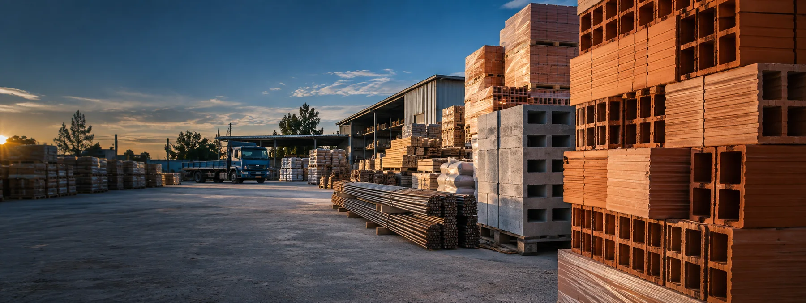

01 / OBRA GRUESA
La base de todo
Ladrillos, áridos, hierros y vigas.

CORRALÓN DE MATERIALES · JOSÉ C. PAZ
Hierros, áridos, ladrillos, pegamentos y todo lo que tu proyecto necesita. Asesoramiento cercano, mejores presupuestos y entrega hasta tu obra.
NUESTRO CATÁLOGO
Explorá las familias de materiales y consultanos por disponibilidad, medidas y precios. Preparamos tu pedido por WhatsApp.
Catálogo orientativo. Consultá variedades, stock y presupuesto por WhatsApp.

SERVICIO QUE HACE LA DIFERENCIA
Coordinamos entregas a domicilio para que los materiales lleguen cuando los necesitás. Contamos con servicio de hidrogrúa sin cargo.
IDEAS PARA TU PRÓXIMA OBRA
Desde los cimientos hasta los detalles finales: soluciones para proyectos de cualquier escala.
Ladrillos, áridos, hierros y vigas.

Pegamentos e impermeabilizantes.
Imágenes ilustrativas generadas para esta propuesta de diseño.
Consultas, pedidos y presupuestos por WhatsApp.
Iniciar conversación ↗